Fotbollsspel
Det här är ett enkelt spel för dig som har börjat lära dig lite grann om Scratch. Spelet går ut på att styra en fotbollsspelare som ska skjuta bollen i mål.
Ett exempel på det färdiga spelet finns här: https://scratch.mit.edu/projects/72797634/
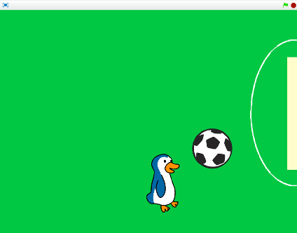
1: Välj sprajtar för fotbollsspelare och boll
Skapa ett nytt projekt. Börja med att ta bort katten och välj två nya sprajtar från biblioteket, en fotbollsspelare och en fotboll.
Tryck på saxen (högt uppe i mitten) och sedan på katten så försvinner den.

Nu vill du lägga till de nya sprajtarna. Tryck på knappen för NY SPRAJT:
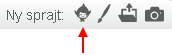
Välj vilken sprajt du vill använda som spelare. I det här exemplet har vi valt en pingvin: Djur/Penguin2 Talk men du kan välja någon annan figur också. Tryck sedan på NY SPRAJT igen och lägg till en fotboll: Saker/Soccer Ball från biblioteket.
Du behöver minska storleken på sprajtarna, så att de får en större yta att spela på. Se till så att spelaren blir något mindre än bollen. Tryck på förminskningsknappen och sedan på sprajten tills den är lagom stor.

Sprajtarnas rotationsstil är också viktigt för spelet. De flesta sprajtar är förinställda på "full rotation" och det göra att din spelare hamnar upp och ned när den rör sig. Ställ in så att spelaren bara ska kunna rotera åt "vänster-höger". För bollen fungerar "full rotation".
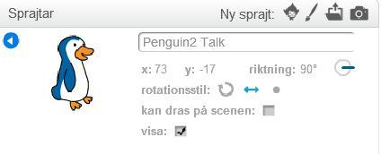 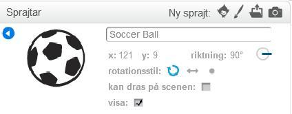
2: Fotbollsplan som bakgrund
Nu ska du rita en fotbollsplan som bakgrund till scenen. Men vi håller det enkelt!
För att ändra bakgrunden trycker du först på SCEN längst till vänster och sedan på fliken BAKGRUNDER högst upp i mitten.
 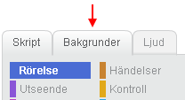
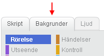
Tryck på FYLL MED FÄRG (målarburken). Välj en grön färg och tryck på den vita bakgrunden, då fylls den med den valda gröna färgen.
Rita ett mål i höger kant med REKTANGEL-verktyget. Målet ska vara vitt. Välj sedan PENSEL eller OVAL och gör en halvcirkel utanför målet, med en färg som ser vit ut men har en annan nyans än målet. Det är viktigt att du använder två olika vita nyanser, du kommer att förstå varför senare!
3: Få spelaren att röra på sig
Nu när bakgrunden är färdig kan du börja skapa ditt första skript. Glöm inte att spara ofta!
Dra din fotbollsspelare till den målade banan om den inte redan står där. Tryck på SKRIPT-fliken. Du ska nu göra ett skript som låter dig styra spelaren med piltangenterna.
Dra ut ett block för HÄNDELSER: "när ___ trycks ned" till skriptytan.
Välj "vänsterpil" i rullistan.
Under blocket kopplar du fast blocket "gå 10 steg" från RÖRELSE.
Högerklicka på skriptet och kopiera, tills du har fyra stycken likadana skript som du lägger bredvid varandra.
Ändra i rullistan så att du har ett skript för "högerpil", ett för "uppåtpil" och ett för "nedåtpil".

Kopiera det här skriptet tre gånger!
Testa ditt projekt! Klicka på START. Se vad som händer när du styr med vänster och höger piltangent. Spelaren går i samma riktning vilken piltangent du än trycker på! Hur kan du ändra det?
Du behöver tala om för sprajten åt vilket håll den ska peka innan den börjar röra på sig, så att den står i rätt riktning! Välj blocket "peka i () riktning" från RÖRELSE och lägg ovanför "gå 10 steg" i alla fyra skript.
Nu gäller det att välja rätt riktning för varje skript: du ser i rullistan vilket gradantal som det ska vara för vänster, höger, upp och ned.
Testa ditt projekt! Klicka på START. Vad händer nu när du styr med piltangenterna? Vad händer när spelaren når scenkanten?
Tips: Om spelaren försvinner ut från scenen behöver du säga åt den att studsa vid kanten så att den stannar inuti scenen! Se om du kan hitta ett sådant kommando i RÖRELSE.
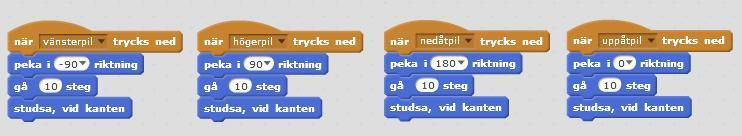
Så här borde dina skript för fotbollsspelaren se ut nu.
4: Få spelaren att sparka på bollen
Nästa steg blir att göra det möjligt för spelaren att sparka bollen i mål! Du ska göra så att bollens sprajt känner av spelarens sprajt, och då få bollen att röra sig i samma riktning som spelaren men med en högre hastighet, så att det ser ut som att bollen skjuts iväg.
Gå till bollens SKRIPT.
Välj en "för alltid"-LOOP från KONTROLL och sätt under startpositionen i skriptet för "när START (flaggan) klickas på".
Välj blocket "om <> då" som finns under KONTROLL och lägg inuti loopen.
Från KÄNNA AV tar du blocket Rör ___?" och väljer spelarens sprajt ur rullistan. Fäst blocket till kommandot så att om bollen rör sprajten då ska något hända.
Vad ska hända? Jo, bollen ska röra sig! Välj "gå 10 steg" från RÖRELSE och lägg in i kommandot för "om <> då".
Ändra antalet steg – det ska vara högre än 10 eftersom spelaren rör sig med den hastigheten och du vill att bollen ska röra sig fortare. Prova dig fram tills du får rätt effekt!
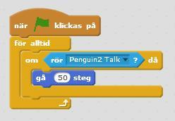
Testa ditt projekt! Klicka på START. Vad händer när spelaren nuddar bollen? Har bollen en bra hastighet? Vad händer när bollen når scenkanten?
Tips: Om bollen försvinner ut från scenen behöver du säga åt den att studsa vid kanten på samma sätt som du gjorde med din fotbollsspelare. Lägg blocket inuti din LOOP men efter "om <> då".
Testa ditt projekt igen. Klicka på START. När bollen har studsat vid kanten, kan spelaren då komma från andra hållet och sparka på bollen? Vad händer?
5: Få bollen att röra sig i rätt riktning
Antagligen rör sig bollen bara i samma riktning, oavsett vilket håll din spelare kommer från. Du behöver säga åt bollen i vilken riktning du vill att den ska röra sig!
Eftersom du vill att spelaren ska kunna sparka på bollen från alla möjliga håll, behöver du tala om för bollen att den ska röra sig i motsatt riktning från där spelaren står när den rör vid bollen. Det här är lite knepigt, men går om du gör det i två steg: först säger du åt bollen att peka mot spelaren, sedan säger du åt den att vända sig helt om. Det behöver den göra innan den rör sig framåt!
Ta blocket "peka mot __" från RÖRELSE och välj spelarens sprajt i rullistan. Till det fäster du sedan blocket som heter "vänd () grader" och skriver in 180 för att bollen ska vändas helt om.
Lägg in de två blocken i kommandot som du redan har gjort för "om <> då". Tänk på att de ska ligga före "gå () steg".
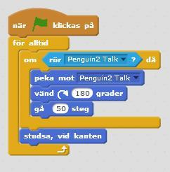
Testa ditt projekt! Klicka på START. Kan du få spelaren att sparka på bollen åt olika håll? Kan du sparka bollen i mål?
6: Göra mål
Nu ska du få fotbollsspelaren att ropa "Mål!" när bollen nuddar det vita målet. För att göra det måste bollen känna av när den nuddar det vita målet, och då meddela spelaren att den är i mål.
Att en sprajt kan skicka meddelande till en annan, kallas för en FUNKTION. Det är ett sätt för olika delar i programmet att kunna "prata" med varandra. Du kommer snart att se varför det är bra att ha!
Börja med att säga till bollens sprajt att om den rör färgen för målet, då ska bollen göra något. Lägg kommandot i samma LOOP som den första "om <> då"-blocket. Färgen för målet får du om du klickar i rutan för "rör färgen [ ]" och sedan klickar på ditt mål på scenen.
Nu ska du be bollen skicka meddelande när den rör färgen för målet. I HÄNDELSER hittar du "skicka ___ och vänta", ändra till nytt meddelande i rullistan och skriv in "Mål".
Det är viktigt att du använder blocket som skickar meddelande OCH väntar, annars så kommer koden av fastna i loopen.
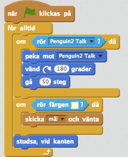
Nu är det spelarens tur! Du behöver tala om för spelarens sprajt att när den tar emot meddelande "Mål", då ska den säga "Mål!" – eller något annat om du hellre vill det. Under UTSEENDE hittar du "säg __ i 2 sekunder". Ändra antalet sekunder om du vill att det spelaren säger ska stå längre.
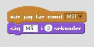
Testa ditt projekt! Klicka på START. Vad händer när du får spelaren att sparka bollen i mål? Ropar fotbollsspelaren "Mål!" när bollen är i mål?
Tips: Om färgen på rektangeln (mål) är densamma som färgen på halvcirkeln (strafflinje), kan inte programmet känna skillnad på mål och strafflinje. Ändra i så fall så att nyansen på vitt skiljer sig åt. Det räcker med en liten skillnad i nyans, för att en dator ska förstå att det är olika färg!
7: Starta om efter mål
Något saknas! Vad ska hända när fotbollsspelaren har skjutit bollen i mål? Nu ligger bara bollen kvar och spelaren har inget mer att göra. Det ska du få fixa till nu. När bollen går i mål, flyttas spelare och boll tillbaka till där de stod från början, så att du kan spela igen.
En startposition är alltid bra att sätta, för att slippa dra tillbaka spelaren varje gång du trycker på START. Du gör då ett INIT-SKRIPT som talar om hur programmet ska starta.
Men istället för att sätta startpositionen i början på skriptet, ska du få använda dig av meddelanden igen! På så sätt skapar du nämligen en FUNKTION som går att använda på flera ställen i ditt program, och du behöver inte upprepa samma skript.
Börja med att sätta sprajterna för spelare och boll där du vill att de ska starta på fotbollsplanen. Markera sedan spelarens sprajt. Gör ett nytt skript för "när START (flaggan) klickas på" och fäst ett block för "skicka ___", ändra till nytt meddelande i rullistan och skriv in "Nytt spel".
Gå till skriptet för "när jag tar emot [mål]" och lägg till blocket "skicka [nytt spel]" även där, efter det att sprajten har sagt "Mål!".
Skapa ett nytt skript för spelaren som tar emot meddelande "nytt spel". Välj från RÖRELSE "gå till x: y:" och koppla fast det blocket under. De värden som redan står för X och Y ska nu stämma överens med sprajtens KOORDINATER, den plats där den står.
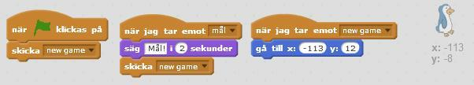
Markera nu bollen och gör ett likadant skript som tar emot meddelande "nytt spel" som för spelaren i punkt 20. Ta sedan ett block för "skicka [nytt spel]" och lägg in i bollens START-skript, innan dess "för alltid"-LOOP.
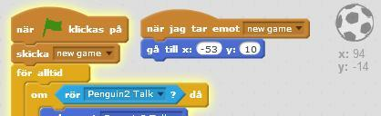
Testa ditt projekt! Klicka på START. Startar spelaren och bollen på rätt plats? Vad händer när spelaren sparkar bollen i mål, hoppar spelaren och bollen tillbaka till startposition?
Färdig!
Grattis, nu har du gjort klart uppgiften.
Glöm inte att spara ditt projekt! Döp det gärna till uppgiftens namn så att du enkelt kan hitta den igen.
Testa ditt projekt
Visa gärna någon det som du har gjort och låt dem testa. Tryck på DELA för att andra ska kunna hitta spelet på Scratch. Gå ut till projektsidan och låt någon annan testa spelet!
Utmaning
Har du tid över? Här kommer en utmaning för dig som vill fortsätta.
Animera fotbollsspelaren
Du kan till exempel ANIMERA fotbollsspelaren genom att byta klädsel på sprajten när den gör mål.
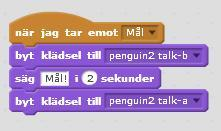
Poängräknare
Du kan även skapa en poängräknare som håller reda på hur många mål du hinner göra inom en viss tid. Eller så kan du göra ett spel för två spelare och skapa en målvakt som ska försöka stoppa bollen.
Tips: Titta på det här exemplet på hur spelet kan se ut.
För att se koden bakom projektet trycker du på SE INUTI.
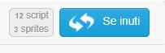
Frågeställningar
Hur kan du göra så att en sprajt inte åker utanför spelplanen när du har flyttat på den?
Hur kan du göra så att en sprajt som pingvinen inte hamnar på huvudet när den byter riktning?
Vad är ett meddelande?
Vad kan du använda ett meddelande till?